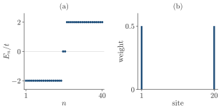
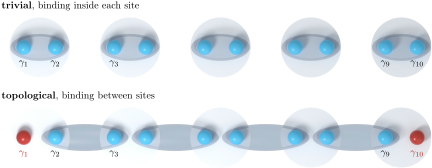

Advanced Quantum Materials 2027 · All lectures · Lecture notes
Session 5. Superconductivity, Nambu Representation and Majorana Physics
5.16 The Kitaev chain as the minimal model with isolated Majoranas
What is the simplest Hamiltonian in which the two Majorana halves of an electron end up far apart? We will now see that a spinless chain with pairing on its bonds does it. At one special point the Hamiltonian binds only halves of neighboring sites, so the first and the last half are left alone at the two ends and cost no energy.
\[c = \frac{1}{2}\left(\gamma_A + i\gamma_B\right), \qquad c^\dagger = \frac{1}{2}\left(\gamma_A - i\gamma_B\right). \tag{5.18}\]
These are the two Majorana operators of Section 5.15 that make one fermion \(c\). They are Hermitian, \(\gamma_A^2=\gamma_B^2=1\) and \(\{\gamma_A,\gamma_B\}=0\). On a chain we give site \(n\) the two halves \(\gamma_{2n-1}\) and \(\gamma_{2n}\).
The simplest superconductor that can host isolated Majoranas is also one of the simplest superconducting Hamiltonians that we can write, which is a one-dimensional spinless chain with nearest-neighbor hopping and nearest-neighbor pairing,
\[H_{\text{Kitaev}} = -t\sum_n \left(c_n^\dagger c_{n+1} + \text{h.c.}\right) - \mu\sum_n c_n^\dagger c_n + \Delta\sum_n \left(c_n c_{n+1} + c_{n+1}^\dagger c_n^\dagger\right). \tag{5.19}\]
Here the pairing has to be on a bond and not onsite. For spinless fermions, an onsite term \(c_n c_n\) vanishes identically because of the Pauli principle (\(c_n^2=0\)), so the simplest allowed pairing is the nearest-neighbor term above. After a Fourier transform, the dispersion and the pairing become
\[\varepsilon(k) = -2t\cos k - \mu, \qquad \Delta(k) = 2i\Delta\sin k, \tag{5.20}\]
so the anomalous term is explicitly odd in \(k\). The sign of \(i\) is a gauge choice, \(\Delta\to-\Delta\), and the spectrum depends only on \(2|\Delta\sin k|\). As (5.12) already tells us, this means that it is necessarily a superconductor of spin-triplet type, here a spinless p-wave one. This agrees with the fact that the onsite channel is forbidden by the Pauli principle.
Now let us set \(\mu=0\) and go to the special point \(\Delta=t\), and let us substitute the Majorana decomposition (5.17)-(5.18) at every site, \(c_n = \frac{1}{2}(\gamma_{2n-1}+i\gamma_{2n})\). We do this substitution in both the hopping and the pairing term. The algebra is direct but a bit long, and it uses the anticommutation relations of the \(\gamma\)’s, so we suggest that you check it yourself, and the steps are in the fold below. The two terms combine so that every \(\gamma_{2n-1}\gamma_{2n+2}\) contribution cancels exactly between hopping and pairing, and the result is very simple.
At \(\Delta=t\) and \(\mu=0\) the Kitaev chain of \(N\) sites becomes
\[H_{\text{Kitaev}}\Big|_{\Delta=t,\ \mu=0} = it\sum_{n=1}^{N-1} \gamma_{2n}\,\gamma_{2n+1}. \tag{5.21}\]
Each term binds the second half of site \(n\) to the first half of site \(n+1\). The first Majorana \(\gamma_1\) and the last one \(\gamma_{2N}\) do not appear, so they cost no energy, and they sit at the two ends of the chain.
The steps From the Kitaev chain (5.19) to the Majorana form (5.21)
Let us take one bond first, the sites \(1\) and \(2\) with the Majoranas \(\gamma_1,\dots,\gamma_4\). With \(c_n=\frac12(\gamma_{2n-1}+i\gamma_{2n})\) and \(c_n^\dagger=\frac12(\gamma_{2n-1}-i\gamma_{2n})\), the hopping term gives eight products of two \(\gamma\)’s. We put every product in the order of the indices with \(\gamma_j\gamma_i=-\gamma_i\gamma_j\) for \(i\neq j\), and the products \(\gamma_1\gamma_3\) and \(\gamma_2\gamma_4\) cancel between \(c_1^\dagger c_2\) and \(c_2^\dagger c_1\). What is left is
\[-t\left(c_1^\dagger c_2+c_2^\dagger c_1\right)=\frac{it}{2}\left(\gamma_2\gamma_3-\gamma_1\gamma_4\right).\]
The pairing term gives in the same way
\[\Delta\left(c_1c_2+c_2^\dagger c_1^\dagger\right)=\frac{i\Delta}{2}\left(\gamma_2\gamma_3+\gamma_1\gamma_4\right).\]
The bond is then the sum of the two,
\[\frac{i}{2}(t+\Delta)\,\gamma_2\gamma_3+\frac{i}{2}(\Delta-t)\,\gamma_1\gamma_4,\]
meaning that the hopping and the pairing bind the same two pairs of Majoranas, with signs that add for \(\gamma_2\gamma_3\) and cancel for \(\gamma_1\gamma_4\). At \(\Delta=t\) only \(it\,\gamma_2\gamma_3\) is left, and \(\gamma_1\) and \(\gamma_4\) do not appear.
For the chain we sum over the bonds, where the bond between \(n\) and \(n+1\) has \(\gamma_{2n}\gamma_{2n+1}\) in place of \(\gamma_2\gamma_3\) and \(\gamma_{2n-1}\gamma_{2n+2}\) in place of \(\gamma_1\gamma_4\). The chemical potential gives \(-\mu c_n^\dagger c_n=-\frac{\mu}{2}\left(1+i\gamma_{2n-1}\gamma_{2n}\right)\), which binds the two halves of the same site and is absent at \(\mu=0\). At \(\Delta=t\) and \(\mu=0\) the sum is (5.21), where \(\gamma_1\) is in no bond on its left and \(\gamma_{2N}\) in no bond on its right. Each of these lines can be checked with the \(4\times4\) matrices of the operators of two sites.
Every Majorana operator \(\gamma_2, \gamma_3, \gamma_4, \dots, \gamma_{2N-1}\) appears in this sum, paired between neighboring sites, but the first Majorana, \(\gamma_1\), and the last one, \(\gamma_{2N}\), do not appear at all. They are completely absent from the Hamiltonian, so they cost zero energy and are completely decoupled from the rest of the system. On an open chain this gives two levels at zero energy, while every bond \(it\gamma_{2n}\gamma_{2n+1}\) costs \(2t\) to fill, and Schematic 5.15 shows both.

This is the same structure that we saw in the SSH model of Section 3.9 and Section 3.9b, in its dimerized strong-coupling limit. There, at full dimerization, the bulk forms bonding and antibonding dimers, while one remaining site at each end decouples and gives a zero-energy edge mode. The Kitaev chain in (5.21) is this same structure, written in terms of Majorana operators instead of ordinary fermion operators. The two decoupled end Majoranas play the role of the two decoupled end sites of the SSH model. We do not derive the SSH model again here, and we only recognize it in terms of a new set of operators. Figure 5.5 shows which Majorana is bound to which, in this phase and in the trivial one.

For comparison, the SSH chain in its two limits is shown again below. The strong intercell hopping leaves one free site at each end, as the Majorana variables do here.

At \(\Delta=t\) and \(\mu=0\) the chain has the dispersion \(E(k)=\sqrt{\varepsilon(k)^2+|\Delta(k)|^2}\) with (5.20). How does the bulk energy depend on \(k\)?
\[\varepsilon(k) = -2t\cos k - \mu, \qquad \Delta(k) = 2i\Delta\sin k, \tag{5.20}\]
Show the answers
- A. ✗ False
This is false. At \(k=0\) we have \(\varepsilon=-2t\) and \(\Delta(0)=0\), so \(E=2t\) and not zero. The same holds at \(k=\pi/2\), where \(\varepsilon=0\) and \(|\Delta|=2t\), so the energy does not grow.
- B. ✓ True
This is true. Here \(\varepsilon=-2t\cos k\) and \(|\Delta(k)|=2t|\sin k|\), so \(E^2=4t^2(\cos^2k+\sin^2k)=4t^2\). This matches the dimers of (5.21), where all bulk modes have the same energy.
\[H_{\text{Kitaev}}\Big|_{\Delta=t,\ \mu=0} = it\sum_{n=1}^{N-1} \gamma_{2n}\,\gamma_{2n+1}. \tag{5.21}\]
- C. ✗ False
This is false. At \(k=\pi/2\) the term \(\varepsilon\) vanishes and \(|\Delta(k)|=2t|\sin(\pi/2)|=2t\), so \(E=2t\). No \(\Delta\) gives a band flat at \(t\), since at \(k=0\) the pairing vanishes and \(E=2t\) for any \(\Delta\).
The Kitaev chain is
\[H=-t\sum_n\left(c_n^\dagger c_{n+1}+\text{h.c.}\right)-\mu\sum_n c_n^\dagger c_n+\Delta\sum_n\left(c_nc_{n+1}+c_{n+1}^\dagger c_n^\dagger\right).\]
We split each site into two Majoranas, \(c_n=\frac12(\gamma_{2n-1}+i\gamma_{2n})\). What is \(H\) at \(\Delta=t\) and \(\mu=0\)?
Show the answers
- A. ✗ False
This is false. Since \(i\gamma_{2n-1}\gamma_{2n}=2c_n^\dagger c_n-1\), this sum is \(2t\sum_n c_n^\dagger c_n\) up to a constant. That is the term \(-\mu\sum_nc_n^\dagger c_n\) with \(\mu=-2t\), with no hopping and no pairing, while at \(\mu=0\) the chain has no such term. It binds the two halves of each site, as in the trivial phase.
- B. ✓ True
This is true. One bond gives \(\frac{i}{2}(t+\Delta)\gamma_{2n}\gamma_{2n+1}+\frac{i}{2}(\Delta-t)\gamma_{2n-1}\gamma_{2n+2}\), and the second term vanishes at \(\Delta=t\). The halves \(\gamma_1\) and \(\gamma_{2N}\) are in no term, so they cost no energy.
- C. ✗ False
This is false. This is the term that cancels, since its coefficient is \(\frac{i}{2}(\Delta-t)\), which is zero at \(\Delta=t\). It is what is left at \(\Delta=-t\), with the opposite sign, and then the free halves are \(\gamma_2\) and \(\gamma_{2N-1}\).
Each picture shows the BdG levels \(E_n\) of an open Kitaev chain of 10 sites. Which chain has a free Majorana at each end?
Show the answers
- A. ✗ False
This is false. The levels fill the band from \(-1.92t\) to \(1.92t\), with no gap and no level at zero. This chain has \(\Delta=0\) and \(\mu=0\), a metal, and its levels are \(\pm2t\cos(\pi j/11)\), which come closest to zero at \(0.28t\).
- B. ✓ True
This is true. Two levels sit at \(E=0\) inside a gap, and the 18 other levels are at \(\pm2t\). This chain has \(\Delta=t\) and \(\mu=0\), where \(\gamma_1\) and \(\gamma_{20}\) do not appear in the Hamiltonian.
- C. ✗ False
This is false. There is a gap, but no level inside it, and the lowest level is at \(0.71t\). This chain has \(\Delta=t\) and \(\mu=2.5t\), and the large \(\mu\) binds the two halves of each site to each other.
At \(\Delta=t\) and \(\mu=0\) the chain is \(H=it\sum_{n=1}^{N-1}\gamma_{2n}\gamma_{2n+1}\). On each bond we define \(d_n=\frac12(\gamma_{2n}+i\gamma_{2n+1})\). Show that \(d_n\) is a fermion and that \(it\gamma_{2n}\gamma_{2n+1}=t\,(2d_n^\dagger d_n-1)\). What does it cost to fill one bond, and what is left at the two ends?
Solution
We use \(\gamma_i^\dagger=\gamma_i\), \(\gamma_i^2=1\) and \(\gamma_i\gamma_j=-\gamma_j\gamma_i\) for \(i\neq j\). We write \(a=\gamma_{2n}\) and \(b=\gamma_{2n+1}\), so \(d_n=\frac12(a+ib)\) and \(d_n^\dagger=\frac12(a-ib)\). Then
\[d_n^2=\tfrac14\left(a^2-b^2+i(ab+ba)\right)=0,\qquad \{d_n,d_n^\dagger\}=\tfrac14\left(2a^2+2b^2\right)=1,\]
so \(d_n\) is a fermion. For the number operator we get
\[d_n^\dagger d_n=\tfrac14\left(a^2+b^2+i(ab-ba)\right)=\tfrac12\left(1+iab\right),\]
meaning that \(iab=2d_n^\dagger d_n-1\), and so \(it\gamma_{2n}\gamma_{2n+1}=t\,(2d_n^\dagger d_n-1)\). An empty bond has \(-t\) and a filled bond \(+t\), so filling one bond costs \(2t\) for every \(n\). This is the flat bulk energy \(E=2t\) of the periodic chain, and the \(N-1\) empty bonds give the ground state energy \(-(N-1)t\).
At the ends, \(\gamma_1\) and \(\gamma_{2N}\) are in no bond. Together they form the fermion \(f=\frac12(\gamma_1+i\gamma_{2N})\), which commutes with \(H\), so \(f^\dagger f=0\) and \(1\) have the same energy. The ground state is then twofold degenerate, with one state of even and one of odd parity. In the BdG spectrum of Schematic 5.15 each fermion mode of energy \(E\) gives two levels, at \(+E\) and at \(-E\). So the \(N-1\) bond fermions give the levels at \(\pm2t\), and the single mode \(f\) gives the two levels at zero. In Section 5.19 four such end Majoranas give the degenerate states of a topological qubit.
Notebook check-in: session5.ipynb, “Emergence of Majorana modes as a function of the size of the superconductor” (Core)
Build the Kitaev chain of (5.19) at the fine-tuned point \(\Delta=t\), \(\mu=0\), and check that two states sit at zero energy for every size, localized at the two ends. These are the two decoupled Majoranas \(\gamma_1\) and \(\gamma_{2N}\) predicted by (5.21). The cell itself uses Delta = 0.1 with d=[1.,1.,0.], which is \(\Delta=0.14\), and mu = 0.3, which is \(\mu=-0.3\). There the two states approach zero only as the chain grows, with oscillations, since the overlap of the two end modes oscillates with the length of the chain.
- In Section 5.17 the end Majoranas survive away from the fine-tuned point, in the whole topological phase \(|\mu|<2t\).
- In Section 5.18 the same chain is built from the helical edge of a quantum spin Hall insulator, two magnets and an ordinary \(s\)-wave superconductor.
- In Section 7.2b the Jordan-Wigner transformation maps a chain of spinless fermions, such as this one, to a chain of spin-1/2 operators, site by site.